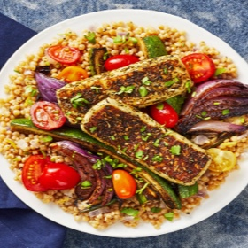

← All recipes
Za’atar-Crusted Grilling Cheese with Sumac Roasted Veggies Over Couscous

Servings: 2 ·
Ingredients
- 1 unit Zucchini
- 1 unit Red Onion
- 1 unit Lemon
- 4 ounce Grape Tomatoes
- ¼ ounce Cilantro
- 2.5 ounce Israeli Couscous
- 1 unit Veggie Stock Concentrate
- 1 teaspoon Sumac
- 8 ounce Grilling Cheese
- 1 tablespoon Za'atar Spice
- 4 teaspoon Cooking Oil
- Salt
- Pepper
Directions
- • Heat broiler to high. Wash and dry all produce. • Halve, peel, and cut onion into 1-inch- thick wedges; mince 1 wedge. Trim and halve zucchini lengthwise; cut into long, thin wedges. Halve tomatoes. Zest and quarter lemon. Roughly chop cilantro.
- • Heat a drizzle of oil in a small pot over medium-high heat. Add minced onion and couscous. Cook, stirring, until onion is softened and couscous is lightly toasted, 2-3 minutes. • Add ¾ cup water (1½ cups for 4 servings) and stock concentrate. Bring to a boil, then cover and reduce to a low simmer. Cook until couscous is tender, 6-8 minutes.• Keep covered off heat until ready to use in step 5.
- • Meanwhile, toss zucchini and onion wedges on a baking sheet with a large drizzle of oil, sumac, salt, and pepper. • Broil, tossing halfway through, until lightly charred, 10-15 minutes. TIP: Watch carefully to avoid burning.
- • While veggies roast, slice grilling cheese into four large pieces (eight pieces for 4 servings). • Place Za’atar Spice on a plate. Coat cheese in za’atar, pressing to adhere. • Heat a drizzle of oil in a large, preferably nonstick, pan over medium-high heat. Add cheese and cook until browned, 1-2 minutes per side.
- • Transfer cooked couscous to a large bowl. Stir in tomatoes, lemon zest, half the roasted veggies, half the cilantro, and a squeeze of lemon juice. Season with salt and pepper.
- • Divide couscous mixture between plates. Top with grilling cheese and remaining roasted veggies. Garnish with remaining cilantro. Serve with remaining lemon wedges on the side.
Original source: hellofresh.com